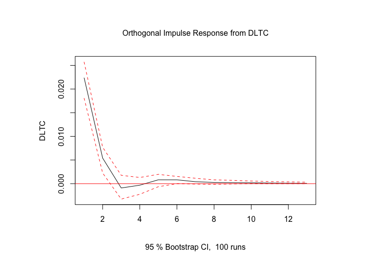

Capítulo 6 Procesos Basados en Vectores Autoregresivos
PBVA
En este capítulo romperemos el supuesto de que el análisis es univariado, ya que introduciremos la posibilidad de que los procesos generadores de datos compartan información entre dos o más series. Como primer aproximación desarrollaremos el concepto de Causalidad de Granger. Mediante esta metodología discutiremos cuando dos series se causan estadísticamente. Posteriormente, introduciremos una técnica más sofisticada conocida como la metodología de Vectores Autoregresivos (VAR), la cual es una generalización de los procesos AR que analizamos al principio del curso.
6.1 Causalidad de Granger
Hasta ahora hemos supuesto que una serie puede ser explicada únicamente con la información contenida en ella misma. No obstante, en adelante trataremos de analizar el caso en el que buscamos determinar relaciones entre variables y cómo el comportamiento de una serie influye en las demás. Algunas relaciones más importantes son las llamadas causalidad. En este caso analizaremos el procedimiento de Granger (1969), conocido como causalidad de Granger. En adelante asumiremos que las series involucradas son debílmente estacionarias.
Sean \(X\) y \(Y\) dos series debílmente estacionarias. Definamos a \(I_t\) un conjunto de toda la información disponible hasta el momento \(t\). Asimismo, digamos que \(\overline{X}_t\) y \(\overline{Y}_t\) son los conjuntos de toda la información disponible (actual y pasada) de \(X\) y \(Y\), respectivamente. Es decir:
\[\begin{eqnarray} \overline{X}_t & := & \{ X_t, X_{t-1}, X_{t-2}, \ldots \} \tag{6.1} \end{eqnarray}\]
\[\begin{eqnarray} \overline{Y}_t & := & \{ Y_t, Y_{t-1}, Y_{t-2}, \ldots \} \\ \tag{6.2} \end{eqnarray}\]
\[\begin{eqnarray} I_t & := & \overline{X}_t + \overline{Y}_t \tag{6.3} \end{eqnarray}\]
Adicionalmnete, definamos \(\sigma^2(.)\) como la varianza del término de error estimado de una regresión dada. Dicho lo anterior, decimos que:
- Existe Causalidad de Granger o \(X\) causa a \(Y\) si y solo si, una regresión lineal da como resultado que:
\[\begin{equation} \sigma^2 (Y_{t+1} | I_t) < \sigma^2 (Y_{t+1} | I_t - X_t) \tag{6.4} \end{equation}\]
Es decir, que la variabilidad del término de error de una regresión lineal de \(Y\) sobre el conjunto de toda la información aplicada a un pronóstico de \(Y_{t+1}\) es MENOR que la variabilidad del término de error de una regresión lineal de \(Y\) sobre el conjunto de la información de \(Y\) aplicada a un pronóstico de \(Y_{t+1}\).
- Existe Causalidad de Granger Instantanéa \(X\) causa de forma instantanéa a \(Y\) si y solo si, una regresión lineal da como resultado: \[\begin{equation} \sigma^2 (Y_{t+1} | \{ I_t, X_{t+1} \}) < \sigma^2 (Y_{t+1} | I_t) \tag{6.5} \end{equation}\]
La definción anterior aplica de igual forma si se reemplaza a \(X\) por \(Y\) y a \(Y\) por \(X\), respectivamente. De acuerdo a la definición anterior, existen 5 diferentes posibilidades de relaciones causales entre las dos series:
- \(X\) y \(Y\) son independientes: \((X, Y)\);
- Existe solo causalidad instantanéa: \((X - Y)\);
- \(X\) causa a \(Y\): \((X \longrightarrow Y)\);
- \(Y\) causa a \(X\): \((X \longleftarrow Y)\), y
- Ambas series se causan: \((X \longleftrightarrow Y)\).
Por lo anterior, representaremos mediante una \(AR(p)\) con variables exógenas lo siguiente: \[\begin{equation} A(L) \begin{bmatrix} Y_t \\ X_t \end{bmatrix} = \begin{bmatrix} a_{11}(L) & a_{12}(L) \\ a_{21}(L) & a_{22}(L) \end{bmatrix} \begin{bmatrix} Y_t \\ X_t \end{bmatrix} = \begin{bmatrix} V_t \\ U_t \end{bmatrix} \tag{6.6} \end{equation}\]
O en su versión \(MA(q)\) con variables exógenas:
\[\begin{equation} \begin{bmatrix} Y_t \\ X_t \end{bmatrix} = B(L) \begin{bmatrix} V_t \\ U_t \end{bmatrix} = \begin{bmatrix} b_{11}(L) & b_{12}(L) \\ b_{21}(L) & b_{22}(L) \end{bmatrix} \begin{bmatrix} V_t \\ U_t \end{bmatrix} \tag{6.7} \end{equation}\]
Para determinar el test de causalidad utilizaremos una especificación similar a la de la ecuación (6.6). Para probar si \(X\) causa a \(Y\) consideraremos la siguiente regresión: \[\begin{equation} Y_t = \alpha_0 + \sum^{k_1}_{k = 1} a^k_{11} Y_{t-k} + \sum^{k_2}_{k = k_0} a^k_{12} X_{t-k} + U_{1,t} \tag{6.8} \end{equation}\]
Donde \(k_0 = 1\) y, en general, se asume que \(k_1 = k_2\). Asimismo, el valor de estas constantes se puede determinar con el cirterio de Akaike (o cualquier otro criterio de información). No obstante, algunos autores sugieren que una buena práctica es considerar valores de \(k_1\) y \(k_2\) 4, 8, 12 y 16.
Dicho lo anterior, el test de causalidad de Granger se establece con una prueba F (similar a la definiada en el Apéndice de estas notas), en la cual se prueba la siguiente hipótesis nula: \[\begin{equation} H_0: a^1_{12} = a^2_{12} = \ldots = a^{k2}_{12} = 0 \tag{6.9} \end{equation}\]
Ahora veámos un ejemplo. Consideremos como variables analizadas al Índice Nacional de Precios al Consumidor (\(INPC_t\)), al Tipo de Cambio (\(TDC_t\)) y al rendimiento anual de los Cetes a 28 días (\(CETE28_t\)), todas desestacionalizadas para el periodo de enero de 2000 a julio de 2019. Dado que la metodología de Granger supone que las series son estacionarias, utilizaremos las diferencias logaritmicas de cada una de las tres series (es decir, utilizaremos una transformación del tipo \(ln(X_t) - ln(X_{t-1})\)). La Figura 6.1 muestra las series en su transformación de diferencias logarítmicas.
Figure 6.1: Series en diferencias logarítmicas dadas por las siguientes expresiones: \(DLINPC_t = ln(DLINPC_t) - ln(DLINPC_{t-1})\), \(DLTC_t = ln(TC_t) - ln(TC_{t-1})\) y \(DLCETE28_t = ln(CETE28_t) - ln(CETE28_{t-1})\).
Por simplicidad, en el Cuadro 6.1 se muestra el resultado de aplicar el test de Granger a diferentes especificaciones, con rezagos 4, 8, 12 y 16, sólo para la serie de Tipo de Cambio en diferencias logarítmicas. En cada una de las pruebas se compara el modelo considerado como regresor a la variable que es candidata de causar, respecto del modelo si considerar a dicha variable.
| Rezagos | Estadiística F | Probabilidad (\(>\)F) | Significancia |
|---|---|---|---|
| 4 | 3.2621 | 0.01265 | * |
| 8 | 1.9079 | 0.06030 | |
| 12 | 2.2577 | 0.01067 | * |
| 16 | 1.6735 | 0.05495 | * |
De acuerdo con el Cuadro 6.1, podemos concluir que existe información estadísticamente significativa para concluir que la inflación causa a la tasa de depreciación cambiaria, ambas medidas como las diferencias logaritmicas. El resto de los resultados para las otras combinaciones de causalidad se encuentran en el Scrip llamado Clase 13 ubicado en el repositorio de GitHub.
6.2 Definición y representación del Sistema o Modelo VAR(p)
En esta sección ampliaremos la discusión planteada en el apartado anterior. En el sentido de que en la sección pasada nuestra discusión se limito al análisis de causalidad entre dos variables a la vez, que si bien es posible extenderlo a más variables es un procedimiento limitado a casos particulares por las siguientes razones.
El procediento de causalidad de Granger supone que es posible identificar un sistema de ecuaciones que debe conformarse una vez que se ha identificado el sentido de la causalidad. Así, el proceso anterior necesita del conocimiento previo de las relaciones que existen entre las varibles.
Adicionalmente, no resuleve el problema más general qué esta relacionado con cómo identificar la causalidad cuando se tienen múltiples variables con múltiples sentidos de causalidad. En esta sección analizaremos una mejor aproximación al probelma de cómo identificar la causalidad múltiple. Por lo tanto, como mécanismo para solucionar el problema planteado, analizaremos el caso de un Sistema o Modelo de Vectores Autoregresivos conocido como VAR.
El primer supuesto del que partiremos es que existe algún grado de endogenidad entre las variables considerdas en el análisis. Adicionalmente, el segundo supuesto que estableceremos es que requerimos que las variables que tengamos consideradas sean estacionarias.
Por lo anterior diremos que un VAR es un procedimiento que sigue fundado en el supuesto de que las variables consideredas son estacionarias, sin que hasta el momento hallamos podido establecer un mécanismo de detección de dicha estacionariedad. Así, hasta este momento del curso hemos pasado de modelo univariados a modelo múltivariados, pero no hemos podido dejar de asumir que las series son estacionarias.
Ahora bien, iniciaremos con el establecimiento de la representación del proceso. Digamos que tenemos un proceso estocástico \(\mathbf{X}\) estacionario de dimensión \(k\). De esta forma la expresión reducida del modelo o el proceso \(VAR(p)\) estará dado por:
\[\begin{equation} \mathbf{X}_t = \mathbf{\delta} + A_1 \mathbf{X}_{t-1} + A_2 \mathbf{X}_{t-2} + \ldots + A_p \mathbf{X}_{t-p} + \mathbf{U}_{t} \tag{6.10} \end{equation}\]
Donde cada uno de las \(A_i\), \(i = 1, 2, \ldots, p\), son matrices cuadradas de dimensión \(k\) y \(\mathbf{U}_t\) representa un vector de dimensión \(k \times 1\) con los residuales en el momento del tiempo \(t\) que son un proceso pueramente aleatorio. También se incorpora un vector de términos constantes denominado como \(\mathbf{\delta}\), el cual es de dimensión \(k \times 1\).
Así, la ecuación (6.10) supone la siguiente estructura de vectores: \[\begin{equation*} \mathbf{X}_t = \begin{bmatrix} X_{1t} \\ X_{2t} \\ \vdots \\ X_{kt} \end{bmatrix} \end{equation*}\]
Para cualquier \(i = 1, 2, \ldots, p\): \[\begin{equation*} \mathbf{X}_{t-i} = \begin{bmatrix} X_{1t-i} \\ X_{2t-i} \\ \vdots \\ X_{kt-i} \end{bmatrix} \end{equation*}\]
\[\begin{equation*} \mathbf{\delta} = \begin{bmatrix} \delta_{1} \\ \delta_{2} \\ \vdots \\ \delta_{k} \end{bmatrix} \end{equation*}\]
También, la ecuación (6.10) supone que cada matriz \(A_i\), \(i = 1, 2, \ldots, p\), esta definida de la siguiente forma: \[\begin{equation*} \mathbf{A}_i = \begin{bmatrix} a^{(i)}_{11} & a^{(i)}_{12} & \ldots & a^{(i)}_{1k} \\ a^{(i)}_{21} & a^{(i)}_{22} & \ldots & a^{(i)}_{2k} \\ \vdots & \vdots & \ddots & \vdots \\ a^{(i)}_{k1} & a^{(i)}_{k2} & \ldots & a^{(i)}_{kk} \end{bmatrix} \end{equation*}\]
Retomando la ecuación (6.10) y considerando que podemos ocupar el operador rezago \(L^j\) de forma analóga al caso del modelo \(AR(p)\), pero aplicado a un vector, tenemos las siguientes ecuaciones:
\[\begin{eqnarray} \mathbf{X}_t - A_1 \mathbf{X}_{t-1} - A_2 \mathbf{X}_{t-2} - \ldots - A_p \mathbf{X}_{t-p} & = & \mathbf{\delta} + \mathbf{U}_{t} \nonumber \\ \mathbf{X}_t - A_1 L \mathbf{X}_{t} - A_2 L^2 \mathbf{X}_{t} - \ldots - A_p L^p \mathbf{X}_{t-p} & = & \mathbf{\delta} + \mathbf{U}_{t} \nonumber \\ (I_k - A_1 L - A_2 L^2 - \ldots - A_p L^p) \mathbf{X}_t & = & \mathbf{\delta} + \mathbf{U}_{t} \nonumber \\ \mathbf{A}(L) \mathbf{X}_t & = & \mathbf{\delta} + \mathbf{U}_{t} \tag{6.11} \end{eqnarray}\]
Adicionalmente, requeriremos que dado que \(\mathbf{U}_t\) es un proceso pueramente aleatorio, este debe cumplir con las siguientes condiciones: 1. El valor esperado del término de erros es cero: \[\begin{equation} \mathbb{E}[\mathbf{U}_t] = 0 \tag{6.12} \end{equation}\]
Existe una matriz de varianzas y covarianzas entre los términos de error contemporáneos dada por: \[\begin{eqnarray} \mathbb{E}[\mathbf{U}_t \mathbf{U}_t'] & = & \mathbb{E} \left[ \begin{bmatrix} U^{(t)}_{1} \\ U^{(t)}_{2} \\ \vdots \\ U^{(t)}_{k} \end{bmatrix} \begin{bmatrix} U^{(t)}_{1} & U^{(t)}_{2} & \ldots & U^{(t)}_{k} \end{bmatrix} \right] \nonumber \\ & = & \mathbb{E} \begin{bmatrix} U^{(t)}_{1} U^{(t)}_{1} & U^{(t)}_{1} U^{(t)}_{2} & \ldots & U^{(t)}_{1} U^{(t)}_{k} \\ U^{(t)}_{2} U^{(t)}_{1} & U^{(t)}_{2} U^{(t)}_{2} & \ldots & U^{(t)}_{2} U^{(t)}_{k} \\ \vdots & \vdots & \ldots & \vdots \\ U^{(t)}_{k} U^{(t)}_{1} & U^{(t)}_{k} U^{(t)}_{2} & \ldots & U^{(t)}_{k} U^{(t)}_{k} \end{bmatrix} \nonumber \\ & = & \begin{bmatrix} \sigma^2_1 & \rho_{12} & \ldots & \rho_{1k} \\ \rho_{21} & \sigma^2_2 & \ldots & \rho_{2k} \\ \vdots & \vdots & \ldots & \vdots \\ \rho_{k1} & \rho_{k2} & \ldots & \sigma^2_k \end{bmatrix} \nonumber \\ & = & \mathbf{\Sigma}_{UU} \tag{6.13} \end{eqnarray}\]
La matriz de varianzas y covarianzas no comtemporáneas es nula. Es decir, que para todo \(t \neq s\): \[\begin{eqnarray} \mathbb{E} [\mathbf{U}_t \mathbf{U}_s'] & = & \mathbb{E} \left[ \begin{bmatrix} U^{(t)}_{1} \\ U^{(t)}_{2} \\ \vdots \\ U^{(t)}_{k} \end{bmatrix} \begin{bmatrix} U^{(s)}_{1} & U^{(s)}_{2} & \ldots & U^{(s)}_{k} \end{bmatrix} \right] \nonumber \\ & = & \mathbb{E} \begin{bmatrix} U^{(t)}_{1} U^{(s)}_{1} & U^{(t)}_{1} U^{(s)}_{2} & \ldots & U^{(t)}_{1} U^{(s)}_{k} \\ U^{(t)}_{2} U^{(s)}_{1} & U^{(t)}_{2} U^{(s)}_{2} & \ldots & U^{(t)}_{2} U^{(s)}_{k} \\ \vdots & \vdots & \ldots & \vdots \\ U^{(t)}_{k} U^{(s)}_{1} & U^{(t)}_{k} U^{(s)}_{2} & \ldots & U^{(t)}_{k} U^{(s)}_{k} \end{bmatrix} \nonumber \\ & = & \mathbf{0} \tag{6.14} \end{eqnarray}\]
Las ecuaciones (6.13) y (6.14) significan que los residuales \(\mathbf{U}_t\) pueden estar correlacionados entre ellos solo en el caso de que la información sea contemporánea, pero no tienen información en común entre residuales de otros periodos.
Al igual que en el caso del modelo o especificación \(AR(p)\) en la especificación del modelo \(VAR(p)\) existen condiciones de estabilidad. Dichas condiciones están dadas por lo siguiente, definamos el siguiente polinomio que resulta de tomar la matriz \(\mathbf{A}(L)\) en la ecuación (6.12):
\[\begin{equation} Det[I_t - A_1 z - A_2 z^2 - \ldots - A_p z^p] \neq 0 \tag{6.15} \end{equation}\]
Donde las raíces del polinomio cumplen que \(|z| \leq 1\), es decir, se ubican dentro del circulo unitario.
La ecuación (6.12) puede ser rexpresada en una forma similar al un proceso de MA. Al respecto, de forma similar a la siguiente ecuación podemos construir un modelo \(VARMA(p,q)\), el cual no estudiamos es este curso.
Reromando el primer planteamiento, podemos escribir: \[\begin{eqnarray} \mathbf{X}_t & = & \mathbf{A}^{-1}(L) \delta + \mathbf{A}^{-1}(L) \mathbf{U}_t \nonumber \\ & = & \mu + \beta(L) \mathbf{U}_t \tag{6.16} \end{eqnarray}\]
Por el lado de las matrices que representan la autocovarianza, estás resultan de resolver lo siguiente: \[\begin{equation} \Gamma_X(\tau) = E[(\mathbf{X}_t - \mu)(\mathbf{X}_{t-\tau} - \mu)'] \tag{6.17} \end{equation}\]
Ahora, sin pérdida de generalidad digamos que la especificación VAR(p) en la ecuación (6.10) no tiene constante, por lo que \(\delta = 0\), lo que implica que \(\mu = 0\). De esta forma las matrices de autocovarianza resultan de: \[\begin{eqnarray*} \Gamma_X(\tau) & = & E[(\mathbf{X}_t)(\mathbf{X}_{t-\tau})'] \\ & = & A_1 E[(\mathbf{X}_{t-1})(\mathbf{X}_{t-\tau})'] + A_2 E[(\mathbf{X}_{t-2})(\mathbf{X}_{t-\tau})'] \\ & & + \ldots + A_p E[(\mathbf{X}_{t-p})(\mathbf{X}_{t-\tau})'] + E[(\mathbf{U}_t(\mathbf{X}_{t-\tau})'] \end{eqnarray*}\]
Finalmente, al igual que en el caso \(AR(p)\) requerimos de una métrica que nos permita determinar el número de rezagos óptimo \(p\) en el \(VAR(p)\). Así, establecemos criterios de información similares a los del \(AR(p)\) dados por:
1.Final Prediction Error (FPE): \[\begin{equation} FPE(p) = \left[ \frac{T + kp + 1}{T - kp - 1} \right]^k |\mathbf{\Sigma}_{\hat{U}\hat{U}}(p)| \tag{6.18} \end{equation}\]
Akaike Criterion (AIC): \[\begin{equation} AIC(p) = ln|\mathbf{\Sigma}_{\hat{U}\hat{U}}(p)| + (k + p k^2) \frac{2}{T} \tag{6.19} \end{equation}\]
Hannan - Quinn Criterion (HQ): \[\begin{equation} HQ(p) = ln|\mathbf{\Sigma}_{\hat{U}\hat{U}}(p)| + (k + p k^2) \frac{2ln(ln(2))}{T} \tag{6.20} \end{equation}\]
Schwartz Criterion (SC): \[\begin{equation} SC(p) = ln|\mathbf{\Sigma}_{\hat{U}\hat{U}}(p)| + (k + p k^2) \frac{ln(T)}{T} \tag{6.21} \end{equation}\]
Donde la matriz de varianzas y covarianzas contemporáneas estará dada por: \[\begin{equation*} \mathbf{\Sigma}_{\hat{U}\hat{U}}(p) = \mathbb{E} \left[ \begin{bmatrix} U^{(t)}_{1} \\ U^{(t)}_{2} \\ \vdots \\ U^{(t)}_{k} \end{bmatrix} \begin{bmatrix} U^{(t)}_{1} & U^{(t)}_{2} & \ldots & U^{(t)}_{k} \end{bmatrix} \right] \end{equation*}\]
Ahora veámos un ejemplo de estimación de \(VAR(p)\). Para el ejemplo utilizaremos las series de INPC, Tipo de CAmbio, rendimiento de los Cetes a 28 días, el IGAE y el Índice de Producción Industrial de los Estados Unidos, todas desestacionalizadas y para el período de enero de 2000 a julio de 2019. Dado que el supuesto estacionariedad sigue presente en nuestro análisis, emplearemos cada una de las series en su versión de diferencias logaritmicas. La Figura 6.2 muestra las series referidas.

Figure 6.2: Series en diferencias logarítmicas, enero de 2000 a julio de 201p
Dicho lo anterior, a continuación mostraremos la tabla que resume el valor de los distintos criterios de información una especificación de un \(VAR(p)\) con constante. Notése que es posible especificar un \(VAR(p)\) con tendencia, caso que no aplica hasta este momento, ya que nuestro análisis de estacionariedad es claro respecto a la media constante (más adelante relajaremos este supuesto), lo cual elimina la poisiblidad de incluir una tendencia.
En el Cuadro 6.2 reportamos los resultados de aplicar una prueba de criterios de información para diferentes valores de reagos. Del cual se concluye que el número óptimo de residuales es 2 (según el crietrio AIC y el FPE) y 1 (según el criterio HQ y el SC). Recordemos que es común que el criterio AIC siempre reporte el mayor valor de rezagos, por lo que es una buena práctica utilizarlo como referente principal.
| Rezagos | AIC | HQ | SC | FPE |
|---|---|---|---|---|
| 1 | -4.636412e+01 | -4.617847e+01 | -4.590430e+01 | 7.317262e-21 |
| 2 | -4.639541e+01 | -4.605506e+01 | -4.555241e+01 | 7.094216e-21 |
| 3 | -4.635305e+01 | -4.585799e+01 | -4.512686e+01 | 7.407479e-21 |
| \(\vdots\) | \(\vdots\) | \(\vdots\) | \(\vdots\) | \(\vdots\) |
De esta forma, justificamos la estimación de un \(VAR(2)\). Los resultados del mismo se repotartan en los siguientes cuadros, en los que se reporta el resultado de una de las ecuaciones. Los resultados restantes se encuentran en el Scrip Clase 14 que se encuentra en repositorio de GitHub. Primero mostraremos los resutlados de las raíces del polinomio caracteristico en el Cuadro 6.3, seguido de un cuadro para la ecuación del IGAE en el Cuadro 6.4(por simplicidad se omiten las otras cuatro ecuaciones del VAR(2)), y del Cuadro 6.5 con la matriz \(\mathbf{\Sigma}_{\hat{U}\hat{U}}\) estimada del VAR.
| 0.7452 | 0.4403 | 0.4403 | 0.3503 | 0.3503 |
| 0.3342 | 0.3342 | 0.3339 | 0.3339 | 0.06951 |
| Variable | Coeficiente | Error Est. | Estad. t | Prob.(\(>\) t) |
|---|---|---|---|---|
| \(DLTC_{t-1}\) | 0.0022016 | 0.0152876 | 0.144 | 0.885620 |
| \(DLINPC_{t-1}\) | -0.2584978 | 0.1658396 | -1.559 | 0.120493 |
| \(DLCETE28_{t-1}\) | 0.0009547 | 0.0049115 | 0.194 | 0.846054 |
| \(DLIGAE_{t-1}\) | -0.2351453 | 0.0699797 | -3.360 | 0.000917 *** |
| \(DLIPI_{t-1}\) | 0.2442406 | 0.0600502 | 4.067 | 6.62e-05 *** |
| \(DLINPC_{t-2}\) | -0.0775039 | 0.1694809 | -0.457 | 0.647904 |
| \(DLTC_{t-2}\) | -0.0413316 | 0.0144650 | -2.857 | 0.004680 ** |
| \(DLCETE28_{t-2}\) | 0.0005341 | 0.0048058 | 0.111 | 0.911612 |
| \(DLIGAE_{t-2}\) | -0.0646890 | 0.0693711 | -0.933 | 0.352092 |
| \(DLIPI_{t-2}\) | 0.1796286 | 0.0620861 | 2.893 | 0.004195 ** |
| \(\delta_4\) | 0.0030377 | 0.0008077 | 3.761 | 0.000217 *** |
| \(DLINPC_t\) | \(DLTC_t\) | \(DLCE28_t\) | \(DLIGAE_t\) | \(DLIGAE_t\) |
|---|---|---|---|---|
| \(DLINPC_t\) | 3.95e-06 | 3.19e-06 | -1.83e-06 | -5.29-07 |
| \(DLTC_t\) | 3.19e-06 | 5.04e-04 | 4.27e-04 | 9.81e-06 |
| \(DLCE28_t\) | -1.83e-06 | 4.27e-04 | 4.63e-03 | 1.26e-05 |
| \(DLIGAE_t\) | -5.29e-07 | 9.81e-06 | 1.26e-05 | 2.43e-05 |
| \(DLIGAE_t\) | 1.34e-06 | 1.61e-05 | 2.76e-05 | 8.75e-06 |
Finalmente, en el Cuadro 6.6 reportamos las pruebas de diagnóstico del VAR(2). Incluímos las pruebas de normalidad, autocorrelación parcial y de heterocedásticidad.
| Estadística (rezagos) | Coeficiente | p-value | Conclusión |
|---|---|---|---|
| Correlación Serial (\(\chi^2 (2)\)) | 59.436 | 0.1696 | Existe auto-correlación serial |
| Correlación Serial (\(\chi^2 (4)\)) | 127.17 | 0.03461 | No existe auto-correlación serial |
| Correlación Serial (\(\chi^2 (6)\)) | 183.14 | 0.03393 | No existe auto-correlación serial |
| Normalidad - JB (\(\chi^2\)) | 2335 | 0.0000 | Los residuales no son normales |
| ARCH (\(\chi^2 (2)\)) | 691.58 | 0.0000 | Los residuales no son homocedásticos |
6.3 Análisis de Impulso-Respuesta
Una de las grandes ventajas que aporta el análisis de los modelos VAR es el análisis de Impulso-Respuesta. Dicho análisis busca cuantificar el efecto que tiene en \(\mathbf{X}_t\) una innovación o cambio en los residuales de cualquiera de las variables en un momento definido. Partamos dela ecuación (6.16) de forma que tenemos:
\[\begin{eqnarray} \mathbf{X}_t & = & \mathbf{A}^{-1}(L) \delta + \mathbf{A}^{-1}(L) \mathbf{U}_t \nonumber \\ & = & \mu + \mathbf{B}(L) \mathbf{U}_t \nonumber \\ & = & \mu + \Psi_0 \mathbf{U}_t + \Psi_1 \mathbf{U}_{t-1} + \Psi_2 \mathbf{U}_{t-2} + \Psi_3 \mathbf{U}_{t-3} + \ldots \tag{6.22} \end{eqnarray}\]
Donde \(\Psi_0 = I\) y cada una de las \(\Psi_i = - \mathbf{B}_i\), \(i = 1, 2, \ldots\). De esta forma se verifica el efecto que tiene en \(\mathbf{X}_t\) cada las innovaciones pasadas. Por lo que el análisis de Impulso-Respuesta cuantifica el efecto de cada una de esas matrices en las que hemos descompuesto a \(\mathbf{B}(L)\).
Retomando el modelo \(VAR(2)\) anteriormente estimado, en el Cuadro 6.7 reportamos las gráficas de Impulso-respuesta de la serie \(DLTC_t\) ante cambios en los residuales del resto de las series y de la propia serie.
 |
 |
 |
|
Los resultados muestran que la respuesta de \(DLTC_t\) ante impulsos en los términos de error fue estadísticamente significativo sólo para alguunos de los casos y en periodos cortos de tiempo. El resto de los resultados de Impulso-Respuesta se encuentra en el Scrip llamado Clase 15 que se ubica en el repositorio de GitHub.